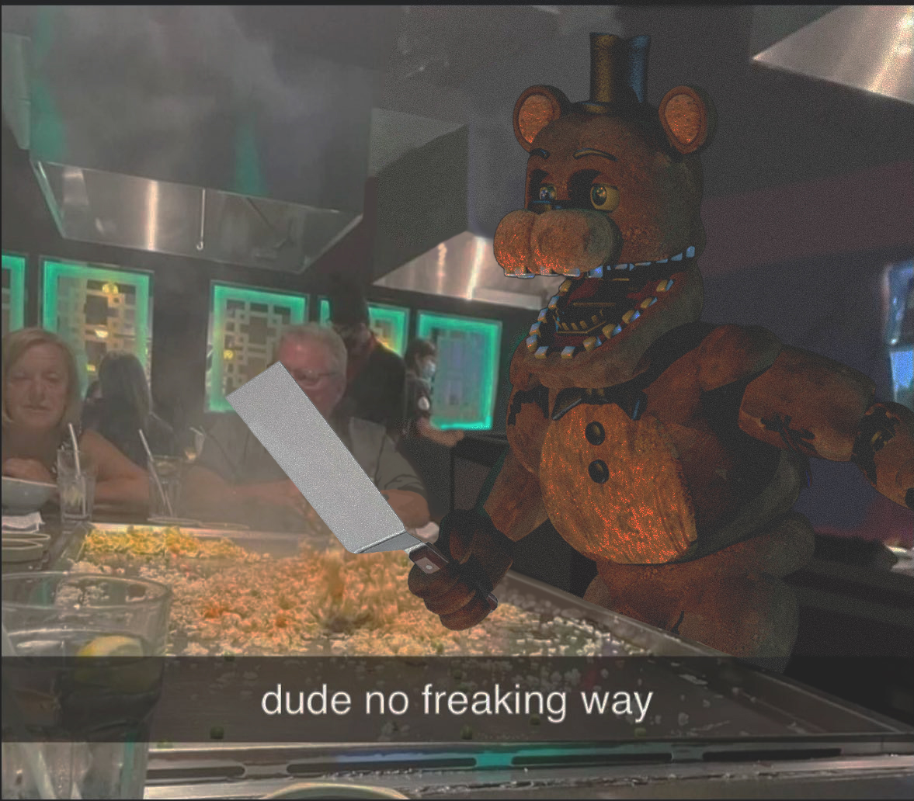
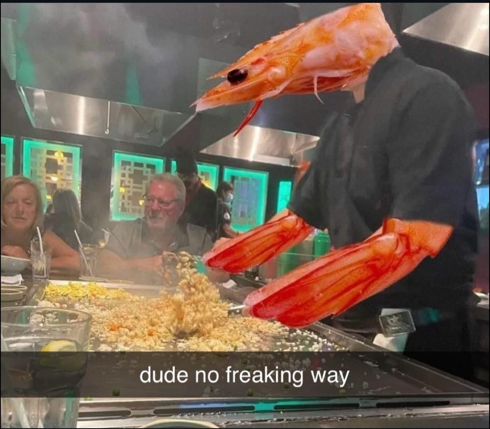
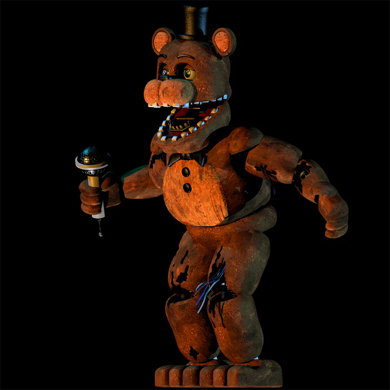
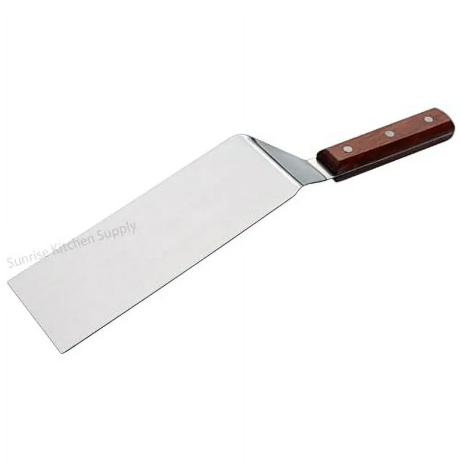

I wanted to combine the shrimp fried rice meme and Freddy from FNAF. I liked this variation of "A shrimp fried this rice?" meme because it's the shrimp actually doing the meme, not just the spin on words. Freddy is a classic random character that I see showing up in memes so I thought it would work combining the two. I will say, adding Freddy takes away the context of the shrimp, but the shock value Freddy brings plus the snapchat caption rewrites the meme entirely. In photoshop I rotated Freddy's arm and added the spatula. I also used the paint brush and tried to color over where the shrimp was. Using effects like grain, brightness, and contrast I was able to blend Freddy into the scene as well as make the background look not colored over.



MEME SOURCES
Shrimp Fried Rice
Freddy Fazbear